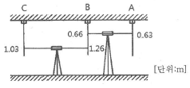
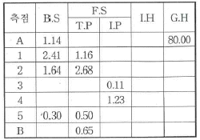
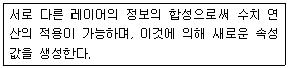

지적기사 (2017-05-07 기출문제)
1과목: 지적측량
1. 경계점좌표등록부 시행지역에서 지적도근점의 측량성과와 검사성과의 연결교차 기준은?
- 0.15m 이내
- 0.20m 이내
- 0.25m 이내
- 0.30m 이내
(정답률: 82%)

2. 평판측량방법에 따른 세부측량에서 지적도를 갖춰 두는 지역의 거리측정단위 기준으로 옳은 것은?
- 1cm
- 5cm
- 10cm
- 20cm
(정답률: 71%)
3. 경위의측량방법에 따른 지적삼각점의 관측과 계산 기준으로 틀린 것은?
- 관측은 10초독 경위의를 사용한다.
- 수평각 관측은 3대회의 방향관측법에 따른다.
- 수평각의 측각공차에서 1방향각의 공차는 40초 이내로 한다.
- 수평각의 측각공차에서 1측회의 폐색공차는 ±30초 이내로 한다.
(정답률: 84%)
4. 지적측량 시행규칙상 세부측량의 기준 및 방법으로 옳지 않은 것은?
- 평판측량방법에 따른 세부측량의 측량결과도는 그 토지가 등록된 도면과 동일한 축척으로 작성하여야 한다.
- 평판측량방법에 따른 세부측량은 교회법, 도선법 및 방사법(放射法)에 따른다.
- 평판측량방법에 따른 세부측량을 교회법으로 하는 경우 방향각의 교각은 45도 이상 120도 이하로 하여야 한다.
- 평판측량방법에 따른 세부측량을 도선법으로 하는 경우 도선의 측선장은 8cm이하로 하여야 한다.
(정답률: 86%)
5. 지적삼각점의 관측계산에서 자오선 수차의 계산단위 기준은?
- 초 아래 1자리
- 초 아래 2자리
- 초 아래 3자리
- 초 아래 4자리
(정답률: 81%)
6. 다음 중 임야도를 갖춰 두는 지역의 세부측량에 있어서 지적기준점에 따라 측량하지 아니하고 지적도의 축척으로 측량한 후 그 성관에 따라 임야측량결과도를 작성할 수 있는 경우는?
- 임야도에 도곽선이 없는 경우
- 경계점의 좌표를 구할 수 없는 경우
- 지적도근점이 설치되어 있지 않은 경우
- 지적도에 기지점은 없지만 지적도를 갖춰 두는 지역에 인접한 경우
(정답률: 44%)
7. 두 점의 좌표가 각각 A(495674.32, 192899.25), B(497845.81, 190256.39) 일 때, A(→)B의 방위는?
- N 9° 24' 29" W
- S 39° 24' 29" E
- N 50° 35' 31" W
- S 50° 35' 31" E
(정답률: 77%)
8. 교회법에 관한 설명 중 틀린 것은?
- 후방교회법에서 소구점을 구하기 위해서는 기지점에는 측판을 설치하지 않아도 된다.
- 전방교회법에서는 3점의 기지점에서 소구점에 대한 방향선 교차로 소구점의 위치를 구할 수 있다.
- 측방교회법으로 구한 수평위치의 정확도는 후방교회법의 경우보다 항상 높다고 말할 수 있다.
- 전방교회법으로 구한 수평위치의 정확도는 후방교회법의 경우보다 항상 높다고 말할 수 있다.
(정답률: 51%)
9. 배각법에 의한 지적도근점측량을 한 결과 한 측선의 길이가 52.47cm이고, 초단위 오차는 18″, 변장반수의 총합계는 183.1일때 해당측선에 배분할 초단위의 각도로 옳은 것은?
- 2″
- 5″
- -2″
- -5″
(정답률: 40%)
10. 50m 줄자로 측정한 A,B점 간 거리가 250m 이었다. 이 줄자가 표준줄자보다 5mm가 줄어 있었다면 정확한 거리는?
- 250.250m
- 250.025m
- 249.975m
- 249.750m
(정답률: 71%)
11. 지적삼각점측량 후 삼각망을 최소제곱법(엄밀조정법)으로 조정하고자 할 때, 이와 관련없는 것은?
- 표준방정식
- 순차방정식
- 상관방정식
- 동시조정
(정답률: 48%)
12. 다음 중 지적기준점 측량의 절차로 옳은 것은?
- 계획의 수립 → 준비 및 현지답사 → 선점 및 조표 → 관측 및 계산과 성과표의 작성
- 계획의 수립 → 선점 및 조표 → 준비 및 현지답사 → 관측 및 계산과 성과표의 작성
- 계획의 수립 → 선점 및 조표 → 관측 및 계산과 성과표의 작성 → 준비 및 현지답사
- 계획의 수립 → 준비 및 현지답사 → 관측 및 계산과 성과표의 작성 → 선점 및 조표
(정답률: 84%)
13. 경위의측량방법과 다각망도선법에 따른 지적도근점의 관측에서 시가지 지역, 축척변경지역 및 경계점좌표등록부 시행 지역의 수평각 관측방법은?
- 방향각법
- 교회법
- 방위각법
- 배각법
(정답률: 67%)
14. 거리측량을 할 때 발생하는 오차 중 우연오차의 원인이 아닌 것은?
- 테이프의 길이가 표준길이와 다를 때
- 온도가 측정 중 시시가각으로 변할 때
- 눈금의 끝수를 정확히 읽을 수 없을 때
- 측정 중 장력을 일정하게 유지하지 못하였을때
(정답률: 57%)
15. 삼각형의 내각을 같은 정밀도로 측정하여 변의 길이를 계산 할 경우 각도의 오차가 변의 길이에 미치는 영향이 최소인 것은?
- 지각삼각형
- 정삼각형
- 둔각삼각형
- 예각삼각형
(정답률: 84%)
16. 경계의 제도에 관한 설명으로 틀린 것은?
- 경계는 0.1mm 폭의 선으로 제도한다.
- 1필지의 경계가 도곽선에 걸쳐 등록되어 있으면 도곽선 밖의 여백에 경계를 제도할 수 없다.
- 지적기준점 등의 매설된 토지를 분할할 경우 그 토지가 작아서 제도하기가 곤란한 때에는 그 도면의 여백에 그 축척의 10배로 확대하여 제도할 수 있다.
- 경계점좌표등록부 등록지역의 도면(경계점 간 거리등록을 하지 아니한 도면을 제외한다)에 등록할 경계점 간 거리는 검은색의 1.0~1.5mm 크기의 아라비아숫자로 제도한다.
(정답률: 65%)
17. 지적도의 축척이 1:600인 지역에서 토지를 분할하는 경우, 면적측정부의 원면적이 4529m2, 보정면적합계가 4550m2일 때 어느 필지의 보정면적이 2033m2이었다면 이 필지의 산출면적은?
- 2019.8m2
- 2023.6m2
- 2024.4m2
- 2028.2m2
(정답률: 70%)
18. 다음 구소삼각지역의 직각좌표계 원점 중 평면직각종횡선수치의 단위를 간(間)으로 한 원점은?
- 조본원점
- 고초원점
- 율곡원점
- 망산원점
(정답률: 69%)
19. 축척 1:50000 지형도 상에서 어느 산정(山頂)부터 산 밑까지의 도상 수평 거리를 측정하였더니 60mm이었다. 산정의 높이는 2200m, 산 밑의 높이는 200m이었다면 그 경사면의 경사는?
- 1/1.5
- 1/2.5
- 1/10
- 1/30
(정답률: 59%)
20. 지적삼각보조점의 위치 결정을 교회법으로 할 경우, 두 삼각형으로부터 계산한 종선교차가 60cm, 횡선교차가 50cm일 때, 위치에 대한 연결교차는?
- 0.1m
- 0.3m
- 0.6m
- 0.8m
(정답률: 53%)
2과목: 응용측량
21. A, B 두 점의 표고가 120m, 144m 이고 두 점간의 경사가 1:2인 경우 표고가 130m되는 지점을 C라 할 때, A점과 C점과의 경사거리는?
- 22.36m
- 25.85m
- 28.28m
- 29.82m
(정답률: 45%)
22. 클로소이드의 형식 중 반향곡선 사이에 2개의 클로소이드를 삽입하는 것은?
- 복합형
- 난형
- 철형
- S형
(정답률: 56%)
23. 수준측량에서 굴절오차와 관측거리의 관계를 설명한 것으로 옳은 것은?
- 거리의 제곱에 비례한다.
- 거리의 제곱에 반비례한다.
- 거리의 제곱근에 비례한다.
- 거리의 제곱근에 반비례한다.
(정답률: 37%)
24. 측점이 터널의 천정에 설치되어 있는 수준측량에서 그림과 같은 관측결과를 얻었다. A점의 지반고가 15.32m일 때, C점의 지반고는?

- 14.32m
- 15.12m
- 16.32m
- 16.49m
(정답률: 59%)
25. 원격센서(remote sensor)를 능동적 센서와 수동적 센서로 구분할 때, 능동적 센서에 해당되는 것은?
- TM(Thematic Mapper)
- 천연색사진
- MSS(Multi-Spectral Scanner)
- SLAR(Side Looking Airbone Radar)
(정답률: 63%)
26. 원심력에 의한 곡선부의 차량탈선을 방지하기 위하여 곡선부의 횡단 노면 외측부를 높여주는 것은?
- 캔트
- 확폭
- 종거
- 완화구간
(정답률: 68%)
27. 수준측량 야장에서 측점 5의 기계고와 지반고는? (단, 표의 단위는 m 이다.)

- 81.35m, 80.85m
- 81.35m, 80.50m
- 81.15m, 80.85m
- 81.15m, 80.50m
(정답률: 43%)
28. 입체영상의 영상정합(image matching)에 대한 설명으로 옳은 것은?
- 경사와 축척을 바로 수정하여 축척을 통일시키고 변위가 없는 수직 사진으로 수정하는 작업
- 사진 상의 주점이나 표정점 등 제점의 위치를 인접한 사진 상에 옮기는 작업
- 지표의 상태를 파악하기 위하여 사진에 찍혀 있는 것이 무엇인지를 판별하는 작업
- 한 영상의 한 위치에 해당하는 실제의 객체가 다른 영상의 어느 위치에 형성되었는가를 발견하는 작업
(정답률: 57%)
29. GNSS 측량에서 의사거리(Pseudo Range)에 대한 설명으로 가장 적합한 것은?
- 인공위성과 기지점 사이의 거리측정값이다.
- 인공위성과 지상수신기 사이의 거리측정 값이다.
- 인공위성과 지상송신기 사이의 거리측정 값이다.
- 관측된 인공위성 상호간의 거리측정값이다.
(정답률: 64%)
30. 노선측량에서 완화곡선의 성질을 설명한 것으로 틀린 것은?
- 완화곡선의 종점의 캔트는 완곡선의 캔트와 같다.
- 완화곡선에 연한 곡률반지름의 감소율은 캔트의 증가율과 같다.
- 완화곡선의 접선은 시점에서는 원호에, 종점에서는 직선에 접한다.
- 완화곡선의 반지름은 시점에서는 무한대이며, 종점에서는 원곡선의 반지름과 같다.
(정답률: 68%)
31. 노선측량 중 공사측량에 속하지 않는 것은?
- 용지측량
- 토공의 기준틀 측량
- 주요말뚝의 인조점 설치 측량
- 중심말뚝의 검측
(정답률: 59%)
32. 터널 내에서 A점의 평면좌표 및 표고가 (1328, 810, 86), B점의 평면좌표 및 표고가(1734, 589, 112)일 때, A, B점을 연결하는 터널을 굴진할 경우 이 터널의 경사거리는? (단, 좌표 및 표고의 단위는 m 이다.)
- 341.5m
- 363.1m
- 421.6m
- 463.0m
(정답률: 43%)
33. 촬영고도 4000m에서 촬영한 항공사진에 나타난 건물의 시차를 주점에서 측정하니 정상부분이 19.32mm, 밑 부분이 18.88mm 이었다. 한 층의 높이를 3m로 가정할 때 이 건물의 층수는?
- 15층
- 28층
- 30층
- 45층
(정답률: 48%)
34. 지성선에 대한 설명으로 옳은 것은?
- 지표면의 다른 종류의 토양 간에 만나는 선
- 경작지와 산지가 교차되는 선
- 지모의 골격을 나타내는 선
- 수평면과 직교하는 선
(정답률: 54%)
35. GPS를 구성하는 위성의 궤도 주기로 옳은 것은?
- 약 6시간
- 약 12시간
- 약 18시간
- 약 24시간
(정답률: 73%)
36. 항공사진측량시 촬영고도 1200m에서 초점거리 15cm, 단촬영경로에 따라 촬영한 연속사진 10장의 입체부분의 지상 유효면적(모델면적)은? (단, 사진크기 23cm×23cm, 중복도 60%)
- 10.24km2
- 12.19km2
- 13.54km2
- 14.26km2
(정답률: 31%)
37. 지형표시 방법의 하나로 단선상의 선으로 지표의 기복을 나타내는 것으로 일명 게바법이라고도 하는 것은?
- 음영법
- 단채법
- 등고선법
- 영선법
(정답률: 67%)
38. GPS 측량에서 이용하는 좌표계는?
- WGS84
- GRS80
- JGD2000
- ITRF2000
(정답률: 72%)
39. 축척 1:50000 지형도에서 등고선 간격을 20m로 할 때 도상에서 표시될 수 있는 최소 간격을 0.45mm로 할 경우 등고선으로 표현할 수 있는 최대 경사각은?
- 40.1°
- 41.6°
- 44.6°
- 46.1°
(정답률: 44%)
40. 수준측량에 관한 용어 설명으로 틀린 것은?
- 표고 : 평균해수면으로부터의 연직거리
- 후시 : 표고를 결정하기 위한 점에 세운 표척 읽음 값
- 중간점 : 전시만을 읽는 점으로서, 이 점의 오차는 다른 점에 영향이 없음
- 기계고 : 기준면으로부터 망원경의 시준선 까지의 높이
(정답률: 42%)
3과목: 토지정보체계론
41. 행정구역의 명칭이 변경된 때에 지적소관청은 시·도지사를 경유하여 국토교통부장관에게 행정구역변경일 몇 일전까지 행정구역의 코드변경을 요청하여야 하는가?
- 5일
- 10일
- 20일
- 30일
(정답률: 60%)
42. 다음 중 지리정보시스템의 국제 표준을 담당하고 있는 기구의 명칭으로 틀린 것은?
- 유럽의 지리정보 표준화기구 : CEN/TC287
- 국제표준화 기구 ISO의 지리정보표준화 관련 위원회 : ISO/TC211
- GIS기본모델의 표준화를 마련한 비영리 민관참여 국제기구 : OGC
- 유럽의 수치지도 제작 표준화 기구 : SDTS
(정답률: 69%)
43. 국가지리정보체계의 추진과정에 관한 내용으로 틀린 것은?
- 1995년부터 2000년까지 제1차 국가GIS사업 수행
- 2006년부터 2010년에는 제2차 국가GIS기본 계획 수립
- 제1차 국가GIS사업에서는 지형도, 공통주제도, 지하시설물도의 DB구축 추진
- 제2차 국가GIS사업에서는 국가공간정보기반 확충을 통한 디지털 국토 실현 추진
(정답률: 70%)
44. 사용자가 네트워크나 컴퓨터를 의식하지 않고 장소에 상관없이 자유롭게 네트워크에 접속할 수 있는 정보통신 환경을 무엇이라 하는가?
- 유비쿼터스(Ubiquitous)
- 위치기반정보시스테(LBS)
- 지능형교통정보시스템(ITS)
- 텔레매틱스(Telematic)
(정답률: 76%)
45. 필지식별번호에 관한 설명으로 틀린 것은?
- 각 필지의 등록사항의 저장과 수정 등을 용이하게 처리할 수 있는 고유번호를 말한다.
- 필지에 관련된 모든 자료의 공통적 색인번호의 역할을 한다.
- 토지관련 정보를 등록하고 있는 각종 대장과 파일 간의 정보를 연결하거나 검색하는 기능을 향상시킨다.
- 필지의 등록사항 변경 및 수정에 따라 변화할 수 있도록 가변성이 있어야 한다.
(정답률: 78%)
46. 관계형 데이터베이스를 위한 산업표준으로 사용되는 대표적인 질의 언어는?
- SQL
- DML
- DCL
- CQL
(정답률: 78%)
47. 디지타이징 입력에 의한 도면의 오류를 수정하는 방법으로 틀린 것은?
- 선의 중복 : 중복된 두선을 제거함으로써 쉽게 오류를 수정할 수 있다.
- 라벨오류 : 잘못된 라벨을 선택하여 수정하거나 제 위치에 옮겨주면 된다.
- Undershoot and Overshoot : 두 선이 목표 지점을 벗어나거나 못 미치는 오류를 수정하기 위해서는 선분의 길이를 늘려주거나 줄여야 한다.
- Sliver 폴리곤 : 폴리곤이 겹치지 않게 적절하게 위치를 이동시킴으로써 제거될 수 있는 경우도 있고, 폴리곤을 형성하고 있는 부정확하게 입력된 선분을 만든 버틱스들을 제거 함으로써 수정될 수도 있다.
(정답률: 60%)
48. 다음 중 관계형 DBMS에 대한 설명으로 옳은 것은?
- 하나의 개체가 여러 개의 부모 레코드와 자녀레코드를 가질 수 있다.
- 데이터들이 트리구조로 표현되기 때문에 하나의 루트(root) 레코드를 가진다.
- SQL과 같은 질의 언어 사용으로 복잡한 질의도 간단하게 표현할 수 있다.
- 서로 같은 자료 부분을 갖는 모든 객체를 묶어서 클래스(class), 혹은 형(type)이라 한다.
(정답률: 58%)
49. 벡터데이터에 비해 래스터데이터가 갖는 장점으로 틀린 것은?
- 자료구조가 단순하다.
- 객체의 크기와 방향성에 정보를 가지고 있다.
- 스캐닝이나 위성영상, 디지털 카메라에 의해 쉽게 자료를 취득할 수 있다.
- 격자의 크기 및 형태가 동일하므로 시뮬레이션에는 용이하다.
(정답률: 62%)
50. 점 개체의 분포 특성을 일정한 단위 공간에서 나타나는 점의 수를 측정하여 분석하는 방법은?
- 방안분석(quadrat analysis)
- 빈도분석(frequency analysis)
- 예측분석(expected analysis)
- 커널분석(kernel analysis)
(정답률: 42%)
51. 다음 중 도로와 같은 교통망이나 하천, 상·하수도 등과 같은 관망의 연결성과 경로를 분석하는 기법은?
- 지형분석
- 다기준 분석
- 근접분석
- 네트워크 분석
(정답률: 72%)
52. 데이터에 대한 정보인 메타데이터의 특징으로 틀린 것은?
- 데이터의 직접적인 접근이 용이하지 않을 경우 데이터를 참조하기 위한 보조데이터로 사용된다.
- 대용량의 공간데이터를 구축하는 데 비용과 시간을 절감할 수 있다.
- 데이터의 교환을 원활하게 지원할 수 있다.
- 메타데이터는 데이터 일관성을 유지하기 어렵게 한다.
(정답률: 69%)
53. 토지정보체계의 관리 목적에 대한 설명으로 틀린 것은?
- 토지관련 정보의 수요 결정과 정보를 신속하고 정확하게 제공할 수 있다.
- 신뢰할 수 있는 가장 최신의 토지등록 데이터를 확보할 수 있도록 하는 것이다.
- 토지와 관련된 등록부와 도면 등의 도해지적 공부의 확보이다.
- 새로운 시스템의 도입으로 토지정보체계의 DB에 관련된 시스템을 자동화하는 것이다.
(정답률: 59%)
54. 다음 중 공간데이터베이스를 구축하기 위한 자료 취득 방법과 가장 거리가 먼 것은?
- 기존 지형도를 이용하는 방법
- 지상 측량에 의한 방법
- 항공사진 측량에 의한 방법
- 통신장비를 이용하는 방법
(정답률: 63%)
55. 수치표고자료가 만들어지고 저장되는 방식이 아닌 것은?
- 일정크기 격자로서 저장되는 격자(grid) 방식
- 등고선에 의한 방식
- 단층에 의한 프로파일(profile) 방식
- 위상(topology) 방식
(정답률: 40%)
56. 위상관계의 특성과 관계가 없는 것은?
- 인접성
- 연결성
- 단순성
- 포함성
(정답률: 65%)
57. 지적도면을 디지타이저를 이용하여 전산 입력할 때 저장되는 자료 구조는?
- 래스터자료
- 문자자료
- 벡터자료
- 속성자료
(정답률: 62%)
58. 다음 중 PBLIS 구축에 따른 시스템의 구성요건으로 옳지 않은 것은?
- 개방적 구조를 고려하여 설계
- 파일처리 방식의 데이터관리시스템 설계
- 시스템의 확장성을 고려하여 설계
- 전국적인 통일된 좌표계 사용
(정답률: 38%)
59. 아래의 설명에 해당하는 공간 분석 유형은?

- 네트워크 분석
- 연결성 추정
- 중첩
- 보간법
(정답률: 70%)
60. 지방자치단체가 지적공부 및 부동산종합공부 정보를 전자적으로 관리·운영하는 시스템은?
- 한국토지정보시스템
- 부동산종합정보시스템
- 지적행정시스템
- 국가공간정보시스템
(정답률: 70%)
4과목: 지적학
61. 지번에 결번이 생겼을 경우 처리하는 방법은?
- 결번된 토지 대장 카드를 삭제 한다.
- 결번 대장을 비치하여 영구히 보존한다.
- 결번된 지번을 삭제하고 다른 지번을 설정한다.
- 신규등록 시 결번을 사용하여 결번이 없도록 한다.
(정답률: 67%)
62. 지적공부의 등록사항을 공시하는 방법으로 적절하지 않은 것은?
- 지적공부에 등록된 경계를 지상에 복원하는 것
- 지적공부를 직접 열람하거나 등본에 의하여 외부에서 알 수 있는 것
- 지적공부에 등록된 토지 표시 사항을 등기부에 기록된 내용에 의하여 정정하는 것
- 지적공부에 등록된 사항과 현장 상황이 맞지 않을 때 현장 상황에 따라 변경 등록하는 것
(정답률: 26%)
63. “지적도에 등록된 경계와 임야도에 등록된 경계가 서로 다른 때에는 축척 1:1200인 지적도에 등록된 경계에 따라 축척 1:6000인 임야도의 경계를 정정하여야 한다.”라는 기준은 어느 원칙을 따른 것인가?
- 등록선후의 원칙
- 용도경중의 원칙
- 축척종대의 원칙
- 경계불가분의 원칙
(정답률: 73%)
64. 다음 중 토지조사사업 당시의 재결기관으로 옳은 것은?
- 도지사
- 임시토지조사국장
- 고등토지조사위원회
- 지방토지조사위원회
(정답률: 73%)
65. 토지이동에 관한 설명 중 틀린 것은?
- 신규등록은 토지이동에 속한다.
- 등록전환, 지목변경의 신청기한은 60일 이내이다.
- 소유자변경, 토지등급 및 수확량 등급 수정도 토지이동에 속한다.
- 토지이동이란 토지의 표시를 새로 정하거나 변경 또는 말소하는 것을 말한다.
(정답률: 61%)
66. 시대와 사용처, 비치처에 따라 다르게 불리는 양안의 명칭에 해당하지 않는 것은?
- 도적(圖籍)
- 성책(成冊)
- 전답타량안(田畓打量案)
- 양전도행장(量田道行帳)
(정답률: 43%)
67. 다음 중 조선시대의 양안(量案)에 관한 설명으로 틀린 것은?
- 호조, 본도, 본읍에 보관하게 하였다.
- 토지의 소재, 등급, 면적을 기록하였다.
- 양안의 소유자는 매 10년마다 측량하여 등재하였다.
- 오늘날의 토지대장과 같은 조선시대의 토지등록장부다.
(정답률: 69%)
68. 토지조사사업 당시의 사정사항으로 옳은 것은?
- 지번과 경계
- 지번과 지목
- 지번과 소유자
- 소유자와 경계
(정답률: 60%)
69. “지적은 특정한 국가나 지역 내에 있는 재산을 지적측량에 의해서 체계적으로 정리해 놓은 공부이다.”라고 지적을 정의한 학자는?
- A. Toffler
- S. R. Simpson
- J. G. McEntyre
- J. L. G. Henssen
(정답률: 60%)
70. 다음 중 대한제국시대에 양전사업을 위해 설치된 최초의 독립된 지적행정관청은?
- 탁지부
- 양지아문
- 지계아문
- 임시재산정리국
(정답률: 65%)
71. 조선시대 매매에 따른 일종의 공증제도로 토지를 매매할 때 소유권 이전에 관하여 관에서 공적으로 증명하여 발급한 서류는?
- 명문(明文)
- 문권(文券)
- 문기(文記)
- 입안(立案)
(정답률: 57%)
72. 지압(地押)조사에 대한 설명으로 옳은 것은?
- 신고, 신청에 의하여 실시하는 토지조사이다.
- 무신고 이동지를 발견하기 위하여 실시하는 토지검사이다.
- 토지의 이동 측량 성과를 검사하는 성과검사이다.
- 분쟁지의 경계와 소유자를 확정하는 토지조사이다.
(정답률: 63%)
73. 다음 중 일필지의 경계설정 방법이 아닌 것은?
- 보완설
- 분급설
- 점유설
- 평분설
(정답률: 46%)
74. 지적의 어원과 관련이 없는 것은?
- capitalism
- catastrum
- capitastrum
- katastikhon
(정답률: 69%)
75. 지적의 분류 중 등록방법에 따른 분류가 아닌 것은?
- 도해지적
- 2차원지적
- 3차원지적
- 입체지적
(정답률: 69%)
76. 지적과 등기에 관한 설명으로 틀린 것은?
- 지적공부는 필지별 토지의 특성을 기록한 공적 장부이다.
- 등기부 을구의 내용은 지적공부 작성의 토대가 된다.
- 등기부 갑구의 정보는 지적공부 작성의 토대가 된다.
- 등기부 표제부는 지적공부의 기록을 토대로 작성된다.
(정답률: 60%)
77. 다음 지적재조사사업에 관한 설명으로 옳은 것은?
- 지적재조사사업은 지적소관청이 시행한다.
- 지적소관청은 지적재조사사업에 관한 기본계획을 수립하여야 한다.
- 지적재조사사업에 관한 주요 정책을 심의 의결하기 위하여 지적소관청 소속으로 중앙지적재조사위원회를 둔다.
- 시·군·구의 지적재조사사업에 관한 주요 정책을 심의·의결하기 위하여 국토교통부장관 소속으로 시·군·구 지적재조사위원회를 둘 수 있다.
(정답률: 46%)
78. 다음 중 지적관련법령의 변천 순서로 옳은 것은?
- 토지조사령 → 조선임야조사령 → 조선지세령 → 지세령 → 지적법
- 토지조사령 → 조선지세령 → 조선임야조사령 → 지세령 → 지적법
- 토지조사령 → 조선임야조사령 → 지세령 → 조선지세령 → 지적법
- 토지조사령 → 지세령 → 조선임야조사령 → 조선지세령 → 지적법
(정답률: 67%)
79. 다음 중 지적도에 건물이 등록되어 있는 국가는?
- 독일
- 대만
- 일본
- 한국
(정답률: 54%)
80. “모든 토지는 지적공부에 등록해야 하고 등록전 토지표시 사항은 항상 실제와 일치하게 유지해야 한다.”가 의미하는 토지등록 제도는?
- 권원등록제도
- 소극적 등록제도
- 적극적 등록제도
- 날인증서등록제도
(정답률: 70%)
5과목: 지적관계법규
81. 부동산등기규칙상 토지의 분할, 합병 및 등기사항의 변경이 있어 토지의 표시변경등기를 신청하는 경우에 그 변경을 증명하는 첨부정보로서 옳은 것은?
- 지적도나 임야도
- 멸실 및 증감확인서
- 이해관계인의 승낙서
- 토지대장 정보나 임야대장 정보
(정답률: 63%)
82. 공간정보의 구축 및 관리 등에 관한 법률 시행령상 지번 부여방법 기준으로 틀린 것은?
- 분할시의 지번은 최종 본번을 부여한다.
- 합병시의 지번은 합병 대상 지번 중 선순위 본번으로 부여 할 수 있다.
- 북서에서 남동으로 순차적으로 부여한다.
- 신규등록 시 인접토지의 본번에 부번을 붙여 부여한다.
(정답률: 46%)
83. 다음 중 축척변경위원회에 대한 설명에 해당하는 것은?
- 축척변경 시행계획에 관하여 소관청이 회부하는 사항에 대한 심의·의결하는 기구이다.
- 토지관련 자료의 효율적인 관리를 위하여 설치된 기구이다.
- 지적측량의 적부심사 청구 사항에 대한 심의 기구이다.
- 축척변경에 대한 연구를 수행하는 주민자치 기구이다.
(정답률: 66%)
84. 고의로 측량성과를 사실과 다르게 한 자에 대한 벌칙 기준으로 옳은 것은?
- 300만원 이하의 과태료
- 1년 이하의 징역 또는 1천만원 이하의 벌금
- 2년 이하의 징역 또는 2천만원 이하의 벌금
- 3년 이하의 징역 또는 3천만원 이하의 벌금
(정답률: 65%)
85. 다음 중 공간정보의 구축 및 관리 등에 관한 법률에서 정의하는 지적공부에 해당하지않는 것은?
- 지적도
- 일람도
- 공유지연명부
- 대지권등록부
(정답률: 66%)
86. 다음 중 등기의 효력이 발생하는 시기는?
- 등기필증을 교부한 때
- 등기신청서를 접수한 때
- 관련기관에 등기필통지를 한 때
- 등기사항을 등기부에 기재한 때
(정답률: 47%)
87. 도시지역과 그 주변지역의 무질서한 시가화를 방지하고 계획적·단계적인 개발을 도모하기 위하여 일정 기간 동안 시가화를 유보할 목적으로 지정하는 것은?
- 보존지구
- 개발제한구역
- 시가화조정구역
- 지구단위계획구역
(정답률: 70%)
88. 공간정보의 구축 및 관리 등에 관한 법률 시행령상 청산금의 납부고지 및 이의신청 기준으로 틀린 것은?
- 납부고지를 받은 자는 그 고지를 받을 날부터 6개월 이내에 청산금을 지적소관청에 내야 한다.
- 납부고지되거나 수령통지돈 청산금에 관하여 이의가 있는 자는 납부고지 또는 수령통지를 받은 날부터 1개월 이내에 지적소관청에 이의신청을 할 수 있다.
- 지적소관청은 수령통지를 한 날부터 6개월 이내에 청산금을 지급하여야 한다.
- 지적소관청은 청산금의 결정을 공고한 날부터 1개월 이내에 토지소유자에게 청산금의 납부고지 또는 수령통지를 하여야 한다.
(정답률: 48%)
89. 다음 중 지적측량업의 업무 내용으로 옳은 것은?
- 도해지역에서의 지적측량
- 지적재조사 사업에 따라 실시하는 기준점측량
- 지적전산자료를 활용한 정보화사업
- 도시개발사업 등이 완료됨에 따라 실시하는 지적도근점 측량
(정답률: 40%)
90. 공간정보의 구축 및 관리 등에 관한 법률상 성능검사대행자 등록의 결격사유가 아닌 것은?
- 피성년후견인 또는 피한정후견인
- 성능검사대행자 등록이 취소된 후 2년이 경과되지 아니한 자
- 이 법을 위한하여 징역형의 집행유예를 선고 받고 그 유예기간 중에 있는 자
- 이 법을 위한하여 징역의 실형을 선고받고 그 집행이 종료(집행이 종료된 것으로 보는 경우를 포함한다)되거나 집행이 면제된 날부터 3년이 경과한 자
(정답률: 71%)
91. 공간정보의 구축 및 관리 등에 관한 법령상 지적측량수수료에 관한 설명으로 틀린 것은?
- 국토교통부장관이 고시하는 표준품셈 중 지적측량품에 지적기술자의 정부노임단가를 적용하여 산정한다.
- 지적측량 종목별 세부 산정기준은 국토교통부장관이 정한다.
- 지적소관청이 직권으로 조사·측량하여 지적공부를 정한 경우, 조사·측량에 들어간 비용을 면제한다.
- 지적측량수수료는 국토교통부장관이 매년 12월 말일까지 고시하여야 한다.
(정답률: 71%)
92. 국토의 계획 및 이용에 관한 법률상 도시·군 관리계획 결정의 효력은 언제를 기준으로 그 효력이 발생하는가?
- 지형도면을 고시한 날부터
- 지형도면 고시가 된 날의 다음 날부터
- 지형도면 고시가 된 날부터 3일 후부터
- 지형도면 고시가 된 날부터 5일 후부터
(정답률: 56%)
93. 다음 중 주된 용도의 토지에 편입하여 1필지로 할 수 있는 종된 토지의 기준으로 옳은 것은?
- 주된 지목의 토지 면적이 1148m2인 토지로 종된 지목의 토지 면적이 115m2인 토지
- 주된 지목의 토지 면적이 2300m2인 토지로 종된 지목의 토지 면적이 231m2인 토지
- 주된 지목의 토지 면적이 3125m2인 토지로 종된 지목의 토지 면적이 228m2인 토지
- 주된 지목의 토지 면적이 3350m2인 토지로 종된 지목의 토지 면적이 332m2인 토지
(정답률: 64%)
94. 지적공부에 관한 전산자료를 이용 또는 활용하고자 승인을 신청하려는 자는 다음 중 누구의 심사를 받아야 하는가? (단, 중앙행정기관의 장, 그 소속 기관의 장 또는 지방자치단체의 장이 승인을 신청하는 경우는 제외한다.)
- 국무총리
- 시·도지사
- 시장·군수·구청장
- 관계 중앙행정기관의 장
(정답률: 32%)
95. 지적소관청이 관리하는 지적기준점표지가 멸실되거나 훼손되었을 때에는 누가 이를다시 설치하거나 보수하여야 하는가?
- 국토지리정보원장
- 지적소관청
- 시·도지사
- 국토교통부장관
(정답률: 68%)
96. 토지의 이동에 따른 지적공부의 정리방법 등에 관한 설명으로 틀린 것은?
- 토지이동정리 결의서는 토지대장·임야대장 또는 경계점좌표등록부별로 구분하여 작성한다.
- 토지이동정리 결의서에는 토지이동신청서 또는 도시개발사업 등의 완료신고서 등을 첨부하여야 한다.
- 소유자정리 결의서에는 등기필증, 등기부등본 또는 그 밖에 토지소유자가 변경되었음을 증명하는 서류를 첨부하여야 한다.
- 토지이동정리 결의서 및 소유자정리 결의서의 작성에 필요한 사항은 대통령령으로 정한다.
(정답률: 68%)
97. 등기관이 지적소관청에 통지하여야 하는 토지의 등기사항이 아닌 것은?
- 소유권의 보존
- 소유권의 이전
- 토지표시의 변경
- 소유권의 등기명의인 표시의 변경
(정답률: 38%)
98. 공간정보의 구축 및 관리 등에 관한 법률에서 규정된 용어의 정의로 틀린 것은?
- “경계”란 필지별로 경계점들을 곡선으로 연결하여 지적공부에 등록한 선을 말한다.
- “면적”이란 지적공부에 등록한 필지의 수평면상 넓이를 말한다.
- “신규등록”이란 새로 조성된 토지와 지적공부에 등록되어 있지 아니한 토지를 지적공부에 등록하는 것을 말한다.
- “축척변경”이란 지적도에 등록된 경계점의 정밀도를 높이기 위하여 작은 축척을 큰 축척으로 변경하여 등록하는 것을 말한다.
(정답률: 70%)
99. 공간정보의 구축 및 관리 등에 관한 법률 시행령상 지상 경계의 결정기준에서 분할에 따른 지상 경계를 지상건축물에 걸리게 결정 할 수 있는 경우로 틀린 것은?
- 공공사업 등에 따라 지목이 학교용지로 되는 토지를 분할하는 경우
- 토지를 토지소유자의 필요에 의해 분할하는 경우
- 도시개발사업 등의 사업시행자가 사업지구의 경계를 결정하기 위하여 토지를 분할하려는 경우
- 법원의 확정판결이 있는 경우
(정답률: 56%)
100. 다음 중 지적삼각점성과표에 기록·관리하여야 하는 사항 중 필요한 경우로 한정하여 기재하는 것은?
- 자오선수차
- 경도 및 위도
- 자표 및 표고
- 시준점의 명칭
(정답률: 62%)